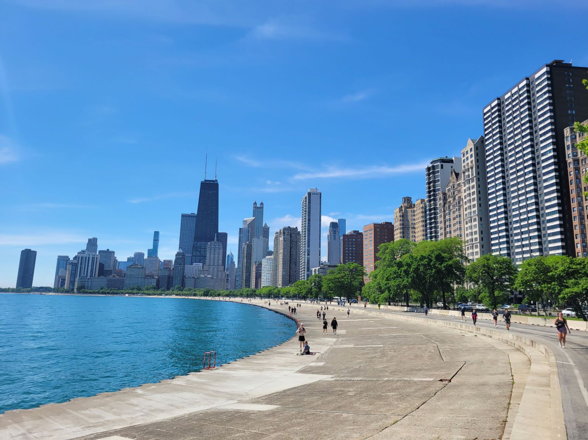
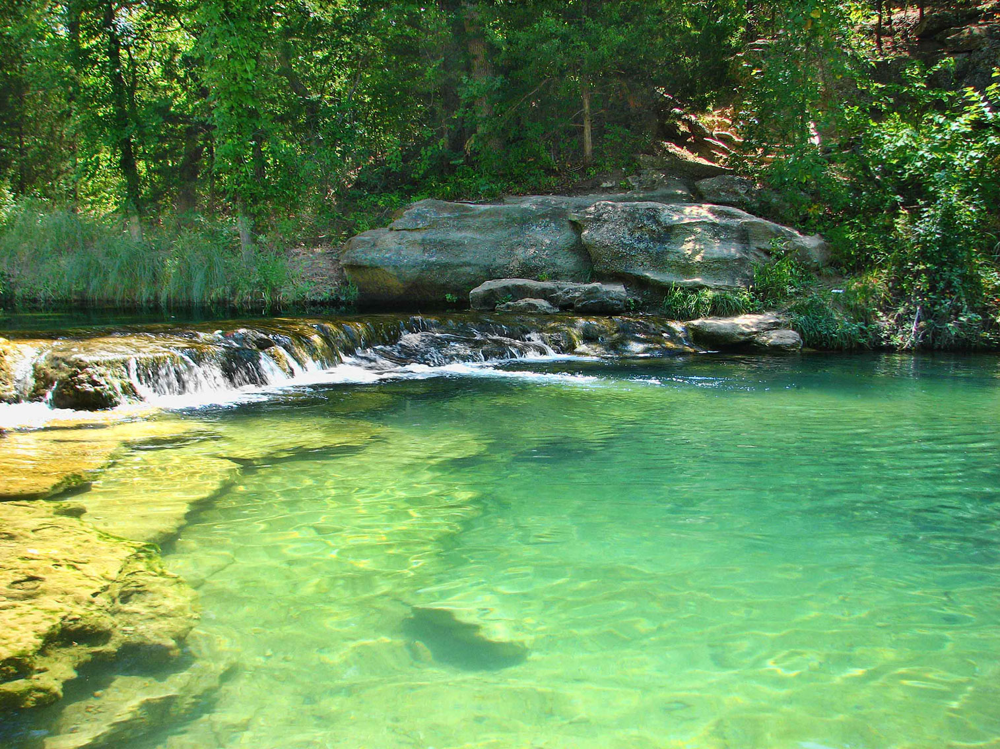
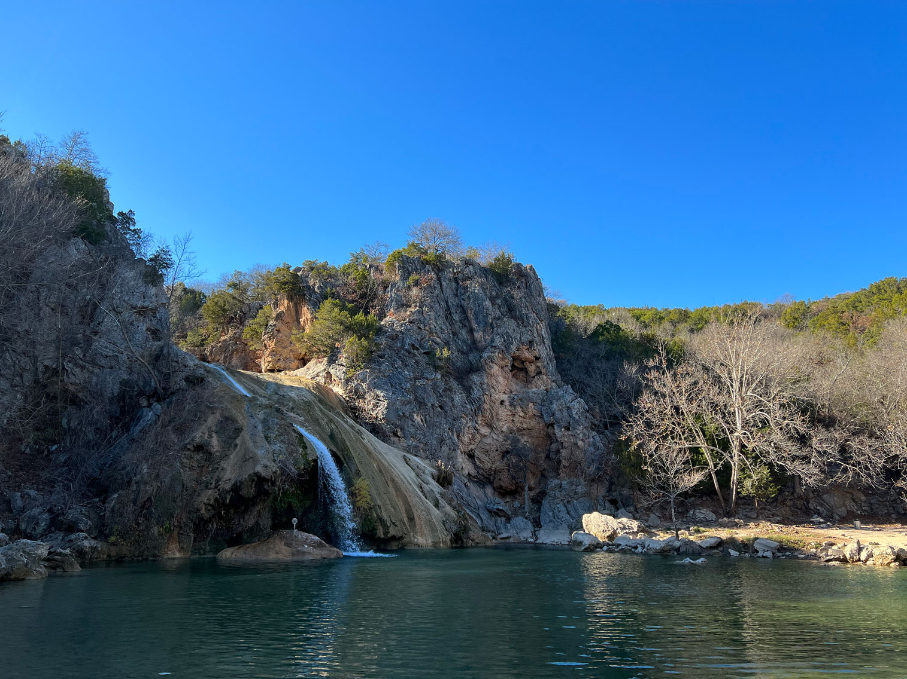

Illinois Travel Guide
Explore Chicago's skyline, deep-dish pizza, and Millennium Park, then venture into Illinois' charming small towns and peaceful Shawnee National Forest.


Places to See in Illinois

Michael Barera, CC BY-SA 4.0, via Wikimedia Commons; Image Size Adjusted
.jpg){kind=link}
Chicago
Chicago, the largest city in Illinois, is renowned for its stunning architecture, vibrant arts scene, and rich cultural heritage. Visitors can explore iconic landmarks such as Millennium Park, the Art Institute of Chicago, and Willis Tower. The city's diverse neighborhoods offer a variety of culinary delights, from deep-dish pizza to international cuisine. Chicago's lakefront provides beautiful beaches and parks, making it a perfect destination for outdoor enthusiasts.

Travertine Creek Swimming Area, Chickasaw NRA
jonathan c. wheeler, CC BY-SA 3.0, via Wikimedia Commons; Image Size Adjusted

Cities
Travertine Creek Swimming Area, Chickasaw NRA
jonathan c. wheeler, CC BY-SA 3.0, via Wikimedia Commons; Image Size Adjusted
National Protected Areas

Broken Bow Spillway, Beavers Bend Resort ParkU.S. Army Corps of Engineers, photographer not specified or unknown, Public domain, via Wikimedia Commons; Image Size Adjusted


Turner Falls ParkJacob.jose, CC BY-SA 4.0, via Wikimedia Commons; Image Size Adjusted

Landmarks and Landscapes
Overview
Illinois is a Midwestern state of about 12.5 million people, anchored by Chicago, one of the world's great cities, and surrounded by prairie farmland. Springfield is the capital, and the state is named for the Illinois (Illiniwek) confederation of Native American tribes. Its nickname, "Land of Lincoln," reflects the president's long ties to the state.
Visitors come for Chicago's architecture, museums, lakefront, deep-dish pizza, and music, and for the Lincoln sites in Springfield and New Salem. Others tour the Mississippi River town of Galena, the historic Nauvoo, the canyons of Starved Rock, Frank Lloyd Wright landmarks, and Route 66, which begins in Chicago and crosses the state.
Geography
Illinois lies between the Mississippi River on the west and the Wabash and Ohio Rivers on the south and east, with Lake Michigan on the northeast. Most of the state is flat to gently rolling prairie, glaciated and extremely fertile, and the Illinois River crosses the center. The far north has rolling hills, the Driftless Area in the northwest has bluffs, and the south has the Shawnee Hills and the Ozark foothills. Charles Mound, at 1,235 feet (376 m), is the highest point.
History
Illinois was home to the Mississippian city of Cahokia, near present-day Collinsville, which was among the largest cities in North America around 1100 CE. French explorers Marquette and Jolliet arrived in 1673, and France, then Britain, and then the United States claimed the region. Illinois became the 21st state in 1818, and Abraham Lincoln built his law and political career in Springfield. Chicago rose after the Great Fire of 1871 as a rail and industrial hub, and the state became a center of agriculture, manufacturing, and later finance.
Chicago
Chicago, on the southwestern shore of Lake Michigan, is the third largest city in the United States and the economic and cultural capital of the Midwest. It is famous for its architecture, from the first skyscrapers to Frank Lloyd Wright's Robie House and the Prairie School homes of Oak Park, and an architecture boat tour on the Chicago River is a highlight. Millennium Park, with Cloud Gate (the "Bean"), the Art Institute of Chicago, and Navy Pier are among the best-known attractions. The Museum Campus has the Field Museum, the Shedd Aquarium, and the Adler Planetarium, while the Museum of Science and Industry is in Hyde Park. Chicago also offers deep-dish pizza and Chicago-style hot dogs, blues and jazz clubs, Wrigley Field, and 26 miles of lakefront trail and beaches.
Springfield and Abraham Lincoln Sites
Springfield, the state capital, is the best place in the country to follow the life of Abraham Lincoln, who lived there from 1837 until he left for Washington in 1861. The Lincoln Home National Historic Site preserves the only house he ever owned, the Abraham Lincoln Presidential Library and Museum is one of the best presidential museums in the country, and the Old State Capitol is where he gave his "House Divided" speech in 1858. Visitors can also see the Lincoln Tomb at Oak Ridge Cemetery, the reconstructed village of Lincoln's New Salem, where he lived as a young man, and the Dana-Thomas House, a Frank Lloyd Wright masterpiece. Springfield is also the home of the horseshoe sandwich and the corn dog on a stick at the Cozy Dog Drive In.
Route 66 in Illinois
Route 66, the "Mother Road," begins in Chicago, where a Begin Route 66 sign on Adams Street marks the start, and it crosses Illinois for about 300 miles before reaching the Mississippi River at St. Louis. Much of the original alignment survives, and the Route 66 Association of Illinois preserves its landmarks. Highlights include the Gemini Giant "Muffler Man" in Wilmington, the Ambler's Texaco Gas Station in Dwight, Polk-a-Dot Drive-In in Braidwood, the Standard Oil Gas Station in Odell, and the Ariston Cafe in Litchfield, open since 1924. Pontiac, Atlanta, and Springfield have murals and museums, and Funks Grove sells maple sirup from a family farm. The Cozy Dog Drive In in Springfield is a classic stop, and the Lou Mitchell's diner in Chicago is a traditional first stop for road trippers.
Shawnee National Forest
Shawnee National Forest covers about 280,000 acres in the hilly far southern tip of Illinois, between the Ohio and Mississippi Rivers, and is the state's only national forest. The landscape is very different from the flat prairies of the north, with sandstone bluffs, canyons, waterfalls, hardwood forests, and rock formations left by the unglaciated Ozark foothills. Popular stops include the Garden of the Gods, with its balanced sandstone formations, Little Grand Canyon, Pomona Natural Bridge, Jackson Falls, and Bell Smith Springs. The Illinois Iron Furnace and the Sand Cave Underground Railroad site add history, and the Rim Rock National Recreation Trail is a favorite hike. Nearby, Giant City State Park and Cave-in-Rock offer more bluffs and trails. Fall color is a highlight in October.
National Protected Areas
Illinois has fewer national park sites than some states but notable ones. New Philadelphia National Historic Site marks the first town platted by a Black man before the Civil War, Pullman National Historical Park in Chicago preserves a company town, and Lincoln Home National Historic Site in Springfield protects the only home Abraham Lincoln owned. The Illinois and Michigan Canal National Heritage Corridor and the Lewis and Clark National Historic Trail also cross the state. Cahokia Mounds is a World Heritage Site run by the state.
State Parks and Historic Sites
Illinois has more than 100 state parks and historic sites. Starved Rock is the most visited, with canyons and waterfalls along the Illinois River, Matthiessen has similar canyons, and Rock Cut near Rockford has lakes and trails. Cave-in-Rock is a river pirate hideout on the Ohio, Lincoln's New Salem is a reconstructed 1830s village, and the Tunnel Hill State Trail follows a former railroad through southern Illinois.
Seasons and When to Visit
Summer is the best time for Chicago's lakefront, festivals, and outdoor dining, though it can be hot and humid. Fall brings cool weather and color in the state parks and river bluffs, and spring has wildflowers and mild temperatures. Winters are cold and snowy, especially in the north, though Chicago's museums, theaters, and holiday markets remain busy, and the Starved Rock area has winter eagle watching and frozen waterfalls.
This article uses material from the Wikipedia article "Illinois", which is released under the Creative Commons Attribution-Share-Alike License 3.0. Additional information was drawn from National Park Service, Illinois State Parks, and Illinois Office of Tourism.